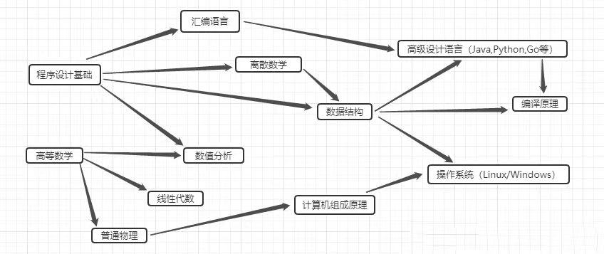

一：计算机各学科关系图

二：对计算机专业认识
计算机专业做为当今最具有发展前景的专业之一，吸引着无数的人前仆后继的去学习。
在进入大学以来，我也参加了一些计算机有关的课程。也学习了一些最基本的计算机技术，针对于一些具体的问题，
甚至可以做到自己写一些程序来进行求解。极大的方便了我的学习。关于我对于计算机专业的认识，目前也仅仅停留在初级阶段。
但是我认为学习计算机，需要我们怀有一颗开放的心，勇于尝试自己不熟悉的领域。不断接受新兴的发展中的事务。
同时我也认识到计算机专业不仅仅是涉及到计算机原理、运行法则。其包含的内容十分广泛，而且划分的也十分的细致，从我们熟知的软件工程、
到不太为人所知的网络工程、信息安全、物联网工程、智能科学与技术、人工智能、大数据等等，其实都是属于计算机学科的内容。并且就算不是从事于计算机的的工作，
也需要我们去掌握计算机的一些基本的技术，它已经渗透到我们生活的方方面面中去了。同时学习计算机专业的技术不仅仅是要去被一些知识，去做题之类的。更多的是要求锻炼我们的思维，
提升我们的解决实际问题的能力。同时养成自主学习的习惯，自己利用各种的资源去提升自己的能力。 最后，谈到计算机专业肯定离不开一个字，“卷”。计算机竞争大，就业压力大，各种大神层出不穷，
这也恰好展现了我国计算机事业蓬勃发展的图景，相信我国的计算机事业会在将来越来越好，取得更多的成就。
三：我的专业规划
- 大一时：初步了解职业，提高人际沟通能力。努力学习基础学科，并且学习一些专业软件的使用如matlab，ps，visio等。增强英语口语能力和专业词汇积累
- 大二时：提高基本素质。积极参加各类的竞赛，多参与学校的社团活动，同时参与各类学校事务建设活动，积极准备入党。
- 大三时：开始积累实习经验，并争取参加各类的科研活动，同时，可以进行家教等兼职来锻炼自己等处理实际事物的能力。并尝试参加高校实践活动等。
- 大四时：参加各类的实践活动，争取发表有价值的论文等，积极与研究生导师联系，必要情况下准备考研事务。争取进一步学习
计算机专业技术导论作业